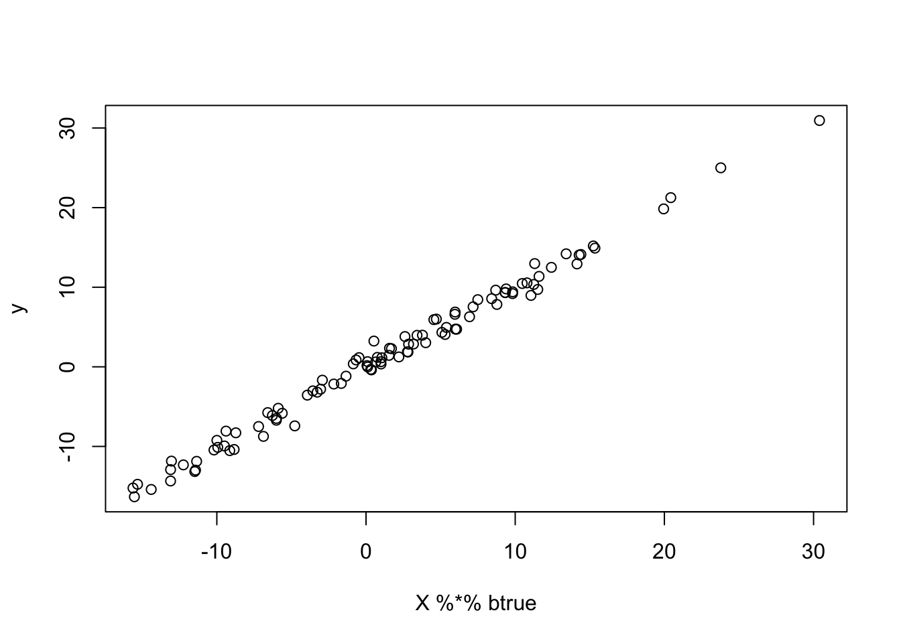
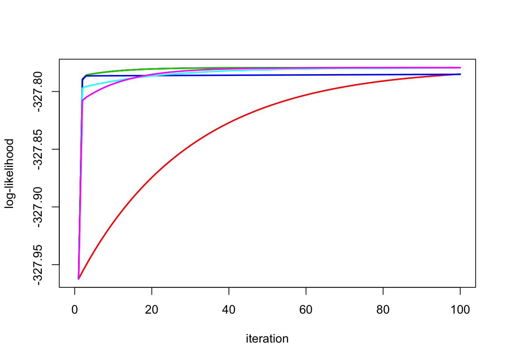
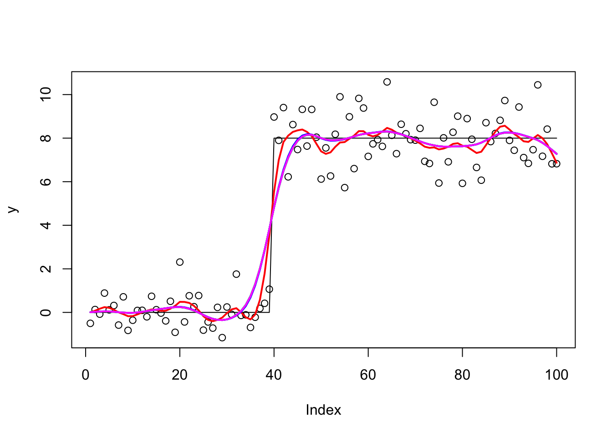
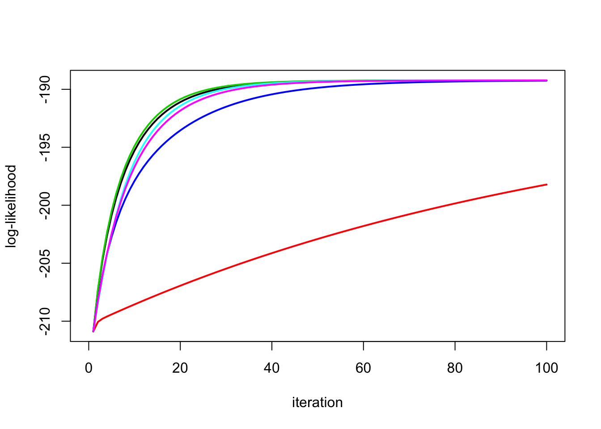
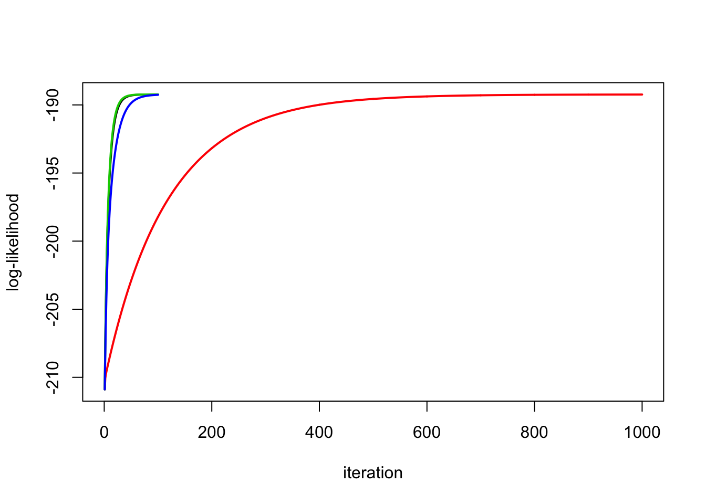
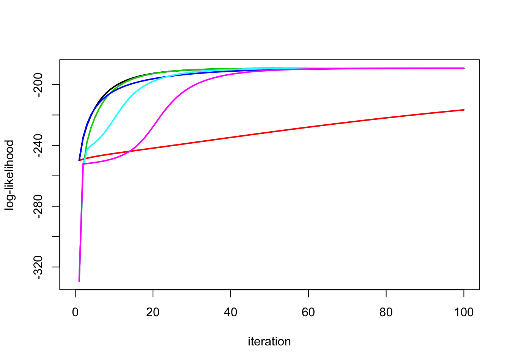
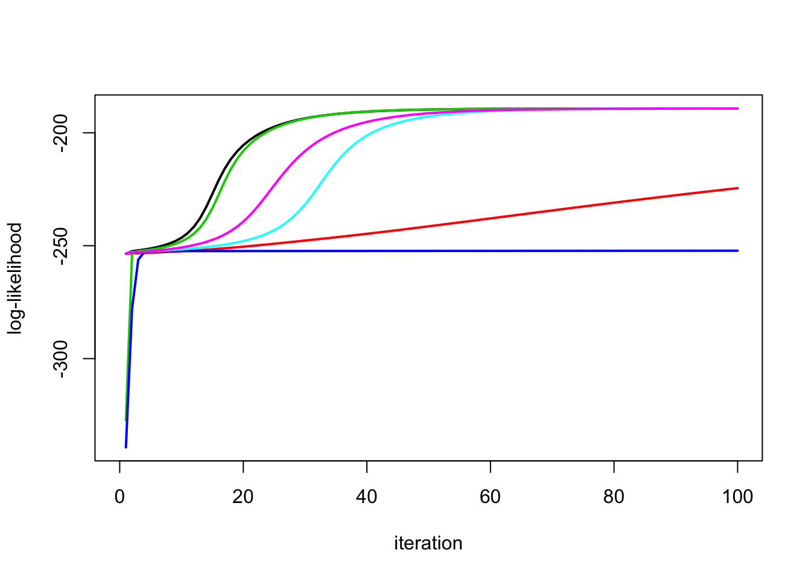
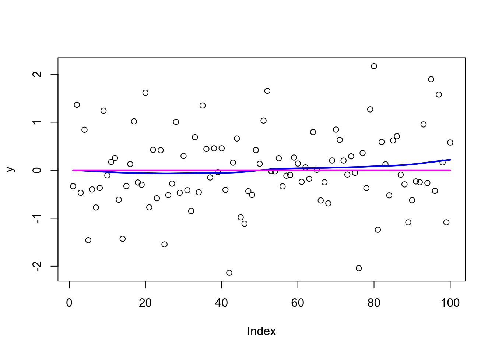
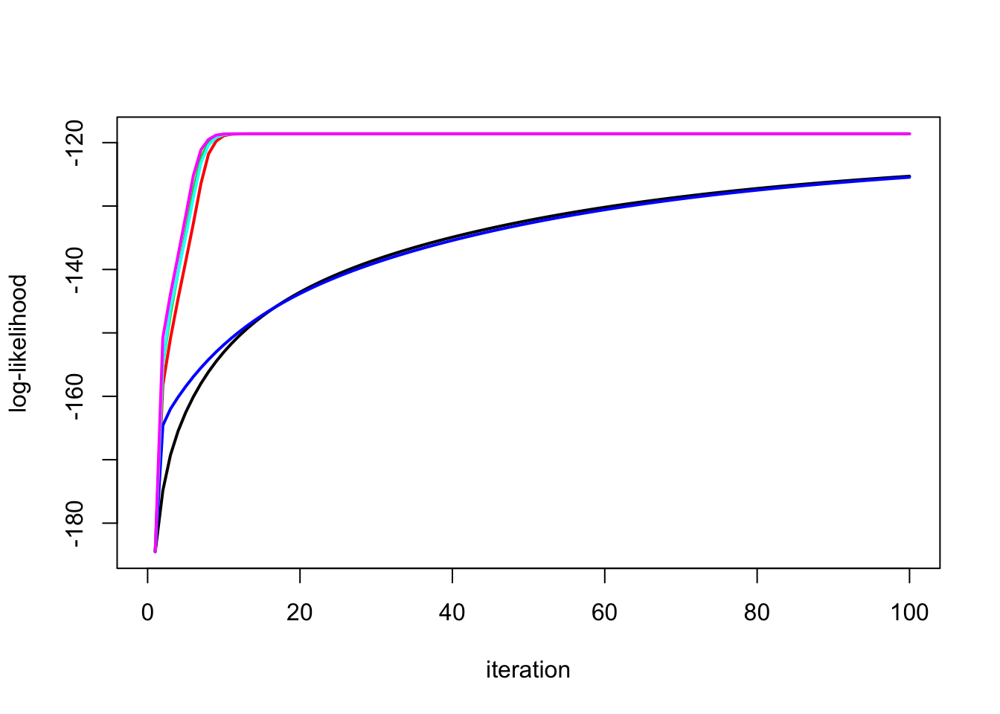

ridge_em
Matthew Stephens
2020-05-29
Last updated: 2020-10-26
Checks: 7 0
Knit directory: misc/analysis/
This reproducible R Markdown analysis was created with workflowr (version 1.6.2). The Checks tab describes the reproducibility checks that were applied when the results were created. The Past versions tab lists the development history.
Great! Since the R Markdown file has been committed to the Git repository, you know the exact version of the code that produced these results.
Great job! The global environment was empty. Objects defined in the global environment can affect the analysis in your R Markdown file in unknown ways. For reproduciblity it’s best to always run the code in an empty environment.
The command set.seed(1) was run prior to running the code in the R Markdown file. Setting a seed ensures that any results that rely on randomness, e.g. subsampling or permutations, are reproducible.
Great job! Recording the operating system, R version, and package versions is critical for reproducibility.
Nice! There were no cached chunks for this analysis, so you can be confident that you successfully produced the results during this run.
Great job! Using relative paths to the files within your workflowr project makes it easier to run your code on other machines.
Great! You are using Git for version control. Tracking code development and connecting the code version to the results is critical for reproducibility.
The results in this page were generated with repository version 1f13992. See the Past versions tab to see a history of the changes made to the R Markdown and HTML files.
Note that you need to be careful to ensure that all relevant files for the analysis have been committed to Git prior to generating the results (you can use wflow_publish or wflow_git_commit). workflowr only checks the R Markdown file, but you know if there are other scripts or data files that it depends on. Below is the status of the Git repository when the results were generated:
Ignored files:
Ignored: .DS_Store
Ignored: .Rhistory
Ignored: .Rproj.user/
Ignored: analysis/.RData
Ignored: analysis/.Rhistory
Ignored: analysis/ALStruct_cache/
Ignored: data/.Rhistory
Ignored: data/pbmc/
Untracked files:
Untracked: .dropbox
Untracked: Icon
Untracked: analysis/GHstan.Rmd
Untracked: analysis/GTEX-cogaps.Rmd
Untracked: analysis/PACS.Rmd
Untracked: analysis/Rplot.png
Untracked: analysis/SPCAvRP.rmd
Untracked: analysis/admm_02.Rmd
Untracked: analysis/admm_03.Rmd
Untracked: analysis/compare-transformed-models.Rmd
Untracked: analysis/cormotif.Rmd
Untracked: analysis/cp_ash.Rmd
Untracked: analysis/eQTL.perm.rand.pdf
Untracked: analysis/eb_prepilot.Rmd
Untracked: analysis/eb_var.Rmd
Untracked: analysis/ebpmf1.Rmd
Untracked: analysis/flash_test_tree.Rmd
Untracked: analysis/flash_tree.Rmd
Untracked: analysis/ieQTL.perm.rand.pdf
Untracked: analysis/lasso_em_03.Rmd
Untracked: analysis/m6amash.Rmd
Untracked: analysis/mash_bhat_z.Rmd
Untracked: analysis/mash_ieqtl_permutations.Rmd
Untracked: analysis/mixsqp.Rmd
Untracked: analysis/mr.ash_lasso_init.Rmd
Untracked: analysis/mr.mash.test.Rmd
Untracked: analysis/mr_ash_modular.Rmd
Untracked: analysis/mr_ash_parameterization.Rmd
Untracked: analysis/mr_ash_pen.Rmd
Untracked: analysis/mr_ash_ridge.Rmd
Untracked: analysis/nejm.Rmd
Untracked: analysis/nmf_bg.Rmd
Untracked: analysis/normal_conditional_on_r2.Rmd
Untracked: analysis/normalize.Rmd
Untracked: analysis/pbmc.Rmd
Untracked: analysis/poisson_transform.Rmd
Untracked: analysis/pseudodata.Rmd
Untracked: analysis/qrnotes.txt
Untracked: analysis/ridge_iterative_02.Rmd
Untracked: analysis/ridge_iterative_splitting.Rmd
Untracked: analysis/samps/
Untracked: analysis/sc_bimodal.Rmd
Untracked: analysis/shrinkage_comparisons_changepoints.Rmd
Untracked: analysis/susie_en.Rmd
Untracked: analysis/susie_z_investigate.Rmd
Untracked: analysis/svd-timing.Rmd
Untracked: analysis/temp.RDS
Untracked: analysis/temp.Rmd
Untracked: analysis/test-figure/
Untracked: analysis/test.Rmd
Untracked: analysis/test.Rpres
Untracked: analysis/test.md
Untracked: analysis/test_qr.R
Untracked: analysis/test_sparse.Rmd
Untracked: analysis/z.txt
Untracked: code/multivariate_testfuncs.R
Untracked: code/rqb.hacked.R
Untracked: data/4matthew/
Untracked: data/4matthew2/
Untracked: data/E-MTAB-2805.processed.1/
Untracked: data/ENSG00000156738.Sim_Y2.RDS
Untracked: data/GDS5363_full.soft.gz
Untracked: data/GSE41265_allGenesTPM.txt
Untracked: data/Muscle_Skeletal.ACTN3.pm1Mb.RDS
Untracked: data/Thyroid.FMO2.pm1Mb.RDS
Untracked: data/bmass.HaemgenRBC2016.MAF01.Vs2.MergedDataSources.200kRanSubset.ChrBPMAFMarkerZScores.vs1.txt.gz
Untracked: data/bmass.HaemgenRBC2016.Vs2.NewSNPs.ZScores.hclust.vs1.txt
Untracked: data/bmass.HaemgenRBC2016.Vs2.PreviousSNPs.ZScores.hclust.vs1.txt
Untracked: data/eb_prepilot/
Untracked: data/finemap_data/fmo2.sim/b.txt
Untracked: data/finemap_data/fmo2.sim/dap_out.txt
Untracked: data/finemap_data/fmo2.sim/dap_out2.txt
Untracked: data/finemap_data/fmo2.sim/dap_out2_snp.txt
Untracked: data/finemap_data/fmo2.sim/dap_out_snp.txt
Untracked: data/finemap_data/fmo2.sim/data
Untracked: data/finemap_data/fmo2.sim/fmo2.sim.config
Untracked: data/finemap_data/fmo2.sim/fmo2.sim.k
Untracked: data/finemap_data/fmo2.sim/fmo2.sim.k4.config
Untracked: data/finemap_data/fmo2.sim/fmo2.sim.k4.snp
Untracked: data/finemap_data/fmo2.sim/fmo2.sim.ld
Untracked: data/finemap_data/fmo2.sim/fmo2.sim.snp
Untracked: data/finemap_data/fmo2.sim/fmo2.sim.z
Untracked: data/finemap_data/fmo2.sim/pos.txt
Untracked: data/logm.csv
Untracked: data/m.cd.RDS
Untracked: data/m.cdu.old.RDS
Untracked: data/m.new.cd.RDS
Untracked: data/m.old.cd.RDS
Untracked: data/mainbib.bib.old
Untracked: data/mat.csv
Untracked: data/mat.txt
Untracked: data/mat_new.csv
Untracked: data/matrix_lik.rds
Untracked: data/paintor_data/
Untracked: data/temp.txt
Untracked: data/y.txt
Untracked: data/y_f.txt
Untracked: data/zscore_jointLCLs_m6AQTLs_susie_eQTLpruned.rds
Untracked: data/zscore_jointLCLs_random.rds
Untracked: explore_udi.R
Untracked: output/fit.k10.rds
Untracked: output/fit.varbvs.RDS
Untracked: output/glmnet.fit.RDS
Untracked: output/test.bv.txt
Untracked: output/test.gamma.txt
Untracked: output/test.hyp.txt
Untracked: output/test.log.txt
Untracked: output/test.param.txt
Untracked: output/test2.bv.txt
Untracked: output/test2.gamma.txt
Untracked: output/test2.hyp.txt
Untracked: output/test2.log.txt
Untracked: output/test2.param.txt
Untracked: output/test3.bv.txt
Untracked: output/test3.gamma.txt
Untracked: output/test3.hyp.txt
Untracked: output/test3.log.txt
Untracked: output/test3.param.txt
Untracked: output/test4.bv.txt
Untracked: output/test4.gamma.txt
Untracked: output/test4.hyp.txt
Untracked: output/test4.log.txt
Untracked: output/test4.param.txt
Untracked: output/test5.bv.txt
Untracked: output/test5.gamma.txt
Untracked: output/test5.hyp.txt
Untracked: output/test5.log.txt
Untracked: output/test5.param.txt
Unstaged changes:
Modified: analysis/ash_delta_operator.Rmd
Modified: analysis/ash_pois_bcell.Rmd
Modified: analysis/lasso_em.Rmd
Modified: analysis/minque.Rmd
Modified: analysis/mr_missing_data.Rmd
Modified: analysis/ridge_admm.Rmd
Note that any generated files, e.g. HTML, png, CSS, etc., are not included in this status report because it is ok for generated content to have uncommitted changes.
These are the previous versions of the repository in which changes were made to the R Markdown (analysis/ridge_em.Rmd) and HTML (docs/ridge_em.html) files. If you’ve configured a remote Git repository (see ?wflow_git_remote), click on the hyperlinks in the table below to view the files as they were in that past version.
| File | Version | Author | Date | Message |
|---|---|---|---|---|
| Rmd | 1f13992 | Matthew Stephens | 2020-10-26 | workflowr::wflow_publish(“ridge_em.Rmd”) |
| html | 337c53e | Matthew Stephens | 2020-10-23 | Build site. |
| Rmd | 4416109 | Matthew Stephens | 2020-10-23 | wflow_publish(“ridge_em.Rmd”) |
| html | 775be78 | Matthew Stephens | 2020-06-25 | Build site. |
| Rmd | e565785 | Matthew Stephens | 2020-06-25 | workflowr::wflow_publish(“ridge_em.Rmd”) |
| html | 683001e | Matthew Stephens | 2020-06-11 | Build site. |
| Rmd | a820c56 | Matthew Stephens | 2020-06-11 | workflowr::wflow_publish(“ridge_em.Rmd”) |
| html | 89c0a67 | Matthew Stephens | 2020-05-29 | Build site. |
| Rmd | 99534e9 | Matthew Stephens | 2020-05-29 | wflow_publish(“ridge_em.Rmd”) |
| html | 547645e | Matthew Stephens | 2020-05-29 | Build site. |
| Rmd | dbe8327 | Matthew Stephens | 2020-05-29 | workflowr::wflow_publish(“ridge_em.Rmd”) |
| html | b637a05 | Matthew Stephens | 2020-05-29 | Build site. |
| Rmd | 4d19a87 | Matthew Stephens | 2020-05-29 | workflowr::wflow_publish(“ridge_em.Rmd”) |
Introduction
Here I am going to experiment with EM algorithm for estimating parameters of ridge regression in different parameterizations.
Initial derivations of EM updates are here. I initially implemented 1,2, and 5 in that document.
A futher derivation for another parameterization is here.
Simple parameterization
\[y \sim N(Xb,s^2)\] \[b \sim N(0,s_b^2I)\]
ridge_em1 = function(y,X, s2,sb2, niter=10){
XtX = t(X) %*% X
Xty = t(X) %*% y
yty = t(y) %*% y
n = length(y)
p = ncol(X)
loglik = rep(0,niter)
for(i in 1:niter){
V = chol2inv(chol(XtX+ diag(s2/sb2,p)))
SigmaY = sb2 *(X %*% t(X)) + diag(s2,n)
loglik[i] = mvtnorm::dmvnorm(as.vector(y),sigma = SigmaY,log=TRUE)
Sigma1 = s2*V # posterior variance of b
mu1 = as.vector(V %*% Xty) # posterior mean of b
s2 = as.vector((yty + sum(diag(XtX %*% (mu1 %*% t(mu1) + Sigma1)))- 2*sum(Xty*mu1))/n)
sb2 = mean(mu1^2+diag(Sigma1))
}
return(list(s2=s2,sb2=sb2,loglik=loglik,postmean=mu1))
}Scaled parameterization
In this parameterization I take the \(s_b\) out of the prior and put it \[y \sim N(s_b Xb,s^2)\] \[b \sim N(0,I)\].
ridge_em2 = function(y,X, s2,sb2, niter=10){
XtX = t(X) %*% X
Xty = t(X) %*% y
yty = t(y) %*% y
n = length(y)
p = ncol(X)
loglik = rep(0,niter)
for(i in 1:niter){
V = chol2inv(chol(XtX+ diag(s2/sb2,p)))
SigmaY = sb2 *(X %*% t(X)) + diag(s2,n)
loglik[i] = mvtnorm::dmvnorm(as.vector(y),sigma = SigmaY,log=TRUE)
Sigma1 = (s2/sb2)*V # posterior variance of b
mu1 = (sqrt(sb2)/s2)*as.vector(Sigma1 %*% Xty) # posterior mean of b
sb2 = (sum(mu1*Xty)/sum(diag(XtX %*% (mu1 %*% t(mu1) + Sigma1))))^2
s2 = as.vector((yty + sb2*sum(diag(XtX %*% (mu1 %*% t(mu1) + Sigma1)))- 2*sqrt(sb2)*sum(Xty*mu1))/n)
}
return(list(s2=s2,sb2=sb2,loglik=loglik,postmean=mu1*sqrt(sb2)))
}A hybrid/redundant parameterization
Motivated by initial observations that 1 and 2 can converge well in different settings I implemented a hybrid of the two:
\[y \sim N(s_b Xb,s^2)\] \[b \sim N(0,\lambda^2).\] Note that there is a redundancy/non-identifiability here as the likelihood depends only on \(s_b^2 \lambda^2\). The hope is to get the best of both worlds…
ridge_em3 = function(y,X, s2, sb2, l2, niter=10){
XtX = t(X) %*% X
Xty = t(X) %*% y
yty = t(y) %*% y
n = length(y)
p = ncol(X)
loglik = rep(0,niter)
for(i in 1:niter){
V = chol2inv(chol(XtX+ diag(s2/(sb2*l2),p)))
SigmaY = l2*sb2 *(X %*% t(X)) + diag(s2,n)
loglik[i] = mvtnorm::dmvnorm(as.vector(y),sigma = SigmaY,log=TRUE)
Sigma1 = (s2/sb2)*V # posterior variance of b
mu1 = (1/sqrt(sb2))*as.vector(V %*% Xty) # posterior mean of b
sb2 = (sum(mu1*Xty)/sum(diag(XtX %*% (mu1 %*% t(mu1) + Sigma1))))^2
s2 = as.vector((yty + sb2*sum(diag(XtX %*% (mu1 %*% t(mu1) + Sigma1)))- 2*sqrt(sb2)*sum(Xty*mu1))/n)
l2 = mean(mu1^2+diag(Sigma1))
}
return(list(s2=s2,sb2=sb2,l2=l2,loglik=loglik,postmean=mu1*sqrt(sb2)))
}Avoiding large 2nd moment computation
The previous parameterizations require the full second moment of \(b\), which is a \(p\) times \(p\) matrix. This can be expensive to compute if \(p\) is big. The following parameterization avoids this.
\[y \sim N(sXb, s^2 I)\]
\[b \sim N(0,s_b^2I)\]
(Note that for simplicity I still do compute the \(p \times p\) matrix, as for now it is the easiest way to implement the ridge regression).
dot = function(x,y){sum(x*y)}
ridge_em4 = function(y, X, s2, sb2, niter=10){
XtX = t(X) %*% X
Xty = t(X) %*% y
yty = t(y) %*% y
n = length(y)
p = ncol(X)
loglik = rep(0,niter)
for(i in 1:niter){
SigmaY = s2*sb2 *(X %*% t(X)) + diag(s2,n)
loglik[i] = mvtnorm::dmvnorm(as.vector(y),sigma = SigmaY,log=TRUE)
Sigma1 = chol2inv(chol(XtX + diag(1/sb2,p))) # posterior variance of b
mu1 = (1/sqrt(s2))*as.vector(Sigma1 %*% Xty) # posterior mean of b
sb2 = mean(mu1^2+diag(Sigma1))
yhat = X %*% mu1
s2 = drop((0.5/n)* (sqrt(dot(y,yhat)^2 + 4*n*yty) - dot(y,yhat)))^2
}
return(list(s2=s2,sb2=sb2,loglik=loglik,postmean=mu1*sqrt(s2)))
}Another redundant parameterization
Here I consider \[y \sim N(s_b Xb, s^2 I)\] where \[b \sim N(0,s^2 \lambda^2I).\]
This is like the redundant parameterization above, except that the prior on \(b\) is scaled by the residual variance (\(s^2\)). This is motivated by the result in the Blasso paper that this makes the posterior on \(s^2,b\) convex.
ridge_em5 = function(y,X, s2, sb2, l2, niter=10){
XtX = t(X) %*% X
Xty = t(X) %*% y
yty = t(y) %*% y
n = length(y)
p = ncol(X)
loglik = rep(0,niter)
for(i in 1:niter){
SigmaY = l2* s2* sb2 *(X %*% t(X)) + diag(s2,n)
loglik[i] = mvtnorm::dmvnorm(as.vector(y),sigma = SigmaY,log=TRUE)
#V = chol2inv(chol(XtX+ diag(s2/(sb2*l2),p)))
Sigma1 = chol2inv(chol((sb2/s2) * XtX + diag(1/(s2*l2),p) )) # posterior variance of b
mu1 = (sqrt(sb2)/s2)*as.vector(Sigma1 %*% Xty) # posterior mean of b
sb2 = (sum(mu1*Xty)/sum(diag(XtX %*% (mu1 %*% t(mu1) + Sigma1))))^2 #same as em3
s2 = as.vector((sum((mu1^2+diag(Sigma1))/l2)+ yty + sb2*sum(diag(XtX %*% (mu1 %*% t(mu1) + Sigma1)))- 2*sqrt(sb2)*sum(Xty*mu1))/(n+p))
# as in em3 but adds sum(mu1^2/l2) to numerator and p to demoninator
l2 = mean(mu1^2+diag(Sigma1))/s2 #as in em3 but divided by s2
}
return(list(s2=s2,sb2=sb2,l2=l2,loglik=loglik,postmean=mu1*sqrt(sb2)))
}Alternative EM for this parameterization
This is an alternative EM that reparameterizes the optimization over \(s^2 \Sigma\). The result is that the update for \(s^2\) simplifies and does not depend on \(\Sigma\).
ridge_em6 = function(y,X, s2, sb2, l2, niter=10){
XtX = t(X) %*% X
Xty = t(X) %*% y
yty = t(y) %*% y
n = length(y)
p = ncol(X)
loglik = rep(0,niter)
for(i in 1:niter){
SigmaY = l2* s2* sb2 *(X %*% t(X)) + diag(s2,n)
loglik[i] = mvtnorm::dmvnorm(as.vector(y),sigma = SigmaY,log=TRUE)
#V = chol2inv(chol(XtX+ diag(s2/(sb2*l2),p)))
Sigma1 = chol2inv(chol((sb2/s2) * XtX + diag(1/(s2*l2),p) )) # posterior variance of b
mu1 = (sqrt(sb2)/s2)*as.vector(Sigma1 %*% Xty) # posterior mean of b
sb2 = (sum(mu1*Xty)/sum(diag(XtX %*% (mu1 %*% t(mu1) + Sigma1))))^2 #same as em3
new_s2 = as.vector((sum((mu1^2)/l2)+ yty + sb2*sum(diag(XtX %*% (mu1 %*% t(mu1) )))- 2*sqrt(sb2)*sum(Xty*mu1))/(n))
# as in em5 but without Sigma terms and without p in denominator
Sigma1 = (new_s2/s2) * Sigma1
s2 = new_s2
l2 = mean(mu1^2+diag(Sigma1))/s2 #as in em3 but divided by s2
}
return(list(s2=s2,sb2=sb2,l2=l2,loglik=loglik,postmean=mu1*sqrt(sb2)))
}Simple Simulations
This is a simple simulation with independent design matrix.
High signal:
This simulation has high signal:
set.seed(100)
sd = 1
n = 100
p = n
X = matrix(rnorm(n*p),ncol=n)
btrue = rnorm(n)
y = X %*% btrue + sd*rnorm(n)
plot(X %*% btrue, y)
y.em1 = ridge_em1(y,X,1,1,100)
y.em2 = ridge_em2(y,X,1,1,100)
y.em3 = ridge_em3(y,X,1,1,1,100)
y.em4 = ridge_em4(y,X,1,1,100)
y.em5 = ridge_em5(y,X,1,1,1,100)
y.em6 = ridge_em6(y,X,1,1,1,100)
plot_loglik = function(res){
maxloglik = max(res[[1]]$loglik)
minloglik = min(res[[1]]$loglik)
maxlen =length(res[[1]]$loglik)
for(i in 2:length(res)){
maxloglik = max(c(maxloglik,res[[i]]$loglik))
minloglik = min(c(minloglik,res[[i]]$loglik))
maxlen= max(maxlen, length(res[[i]]$loglik))
}
plot(res[[1]]$loglik,type="n",ylim=c(minloglik,maxloglik),xlim=c(0,maxlen),ylab="log-likelihood",
xlab="iteration")
for(i in 1:length(res)){
lines(res[[i]]$loglik,col=i,lwd=2)
}
}
res = list(y.em1,y.em2,y.em3,y.em4,y.em5,y.em6)
plot_loglik(res)
No signal
This simulation has no signal (b=0):
btrue = rep(0,n)
y = X %*% btrue + sd*rnorm(n)
y.em1 = ridge_em1(y,X,1,1,100)
y.em2 = ridge_em2(y,X,1,1,100)
y.em3 = ridge_em3(y,X,1,1,1,100)
y.em4 = ridge_em4(y,X,1,1,100)
y.em5 = ridge_em5(y,X,1,1,100)
y.em6 = ridge_em5(y,X,1,1,100)
plot_loglik(list(y.em1,y.em2,y.em3,y.em4,y.em5,y.em6))
Trendfiltering Simulations
This is more challenging example (in that the design matrix is correlated)
High Signal
set.seed(100)
sd = 1
n = 100
p = n
X = matrix(0,nrow=n,ncol=n)
for(i in 1:n){
X[i:n,i] = 1:(n-i+1)
}
btrue = rep(0,n)
btrue[40] = 8
btrue[41] = -8
y = X %*% btrue + sd*rnorm(n)
plot(y)
lines(X %*% btrue)
y.em1 = ridge_em1(y,X,1,1,100)
lines(X %*% y.em1$postmean,col=1,lwd=2)
y.em2 = ridge_em2(y,X,1,1,100)
lines(X %*% y.em2$postmean,col=2,lwd=2)
y.em3 = ridge_em3(y,X,1,1,1,100)
lines(X %*% y.em3$postmean,col=3,lwd=2)
y.em4 = ridge_em4(y,X,1,1,100)
lines(X %*% y.em4$postmean,col=4,lwd=2)
y.em5 = ridge_em5(y,X,1,1,1,100)
lines(X %*% y.em5$postmean,col=5,lwd=2)
y.em6 = ridge_em6(y,X,1,1,1,100)
lines(X %*% y.em6$postmean,col=6,lwd=2)
Look at the likelihoods:
plot_loglik(list(y.em1,y.em2,y.em3,y.em4,y.em5,y.em6))
Run the second one longer and check it:
y.em2 = ridge_em2(y,X,1,1,1000)
plot_loglik(list(y.em1,y.em2,y.em3,y.em4))
y.em1$sb2[1] 0.02203472y.em2$sb2[1] 0.02305466y.em3$sb2 * y.em3$l2[1] 0.02189412y.em4$sb2 * y.em4$s2[1] 0.02435217y.em5$sb2 * y.em5$l2 * y.em5$s2[1] 0.02207946y.em6$sb2 * y.em6$l2 * y.em6$s2[1] 0.02237323y.em1$s2[1] 1.612878y.em2$s2[1] 1.606894y.em3$s2[1] 1.613795y.em4$s2[1] 1.566927y.em5$s2[1] 1.61027y.em6$s2[1] 1.60751Different initializations
Try starting \(s\) in wrong place
y.em1 = ridge_em1(y,X,10,1,100)
y.em2 = ridge_em2(y,X,10,1,100)
y.em3 = ridge_em3(y,X,10,1,1,100)
y.em4 = ridge_em4(y,X,10,1,100)
y.em5 = ridge_em5(y,X,10,1,1,100)
y.em6 = ridge_em6(y,X,10,1,1,100)
plot_loglik(list(y.em1,y.em2,y.em3,y.em4,y.em5,y.em6))
Try starting \(s2\) in wrong place
y.em1 = ridge_em1(y,X,1,10,100)
y.em2 = ridge_em2(y,X,1,10,100)
y.em3 = ridge_em3(y,X,1,10,10,100)
y.em4 = ridge_em4(y,X,1,10,100)
y.em5 = ridge_em5(y,X,1,10,10,100)
y.em6 = ridge_em6(y,X,1,10,10,100)
plot_loglik(list(y.em1,y.em2,y.em3,y.em4,y.em5,y.em6))
Try starting both in wrong place. Interestingly in this example em4 seems to converge to a local optimum?
y.em1 = ridge_em1(y,X,.1,10,100)
y.em2 = ridge_em2(y,X,.1,10,100)
y.em3 = ridge_em3(y,X,.1,10,10,100)
y.em4 = ridge_em4(y,X,.1,10,100)
y.em5 = ridge_em5(y,X,.1,10,10,100)
y.em6 = ridge_em6(y,X,.1,10,10,100)
plot_loglik(list(y.em1,y.em2,y.em3,y.em4,y.em5,y.em6))
y.em4$s2[1] 0.1075621y.em1$s2[1] 1.609084No signal case
Try no signal case – the convergence issues are reversed!
sd = 1
n = 100
p = n
X = matrix(0,nrow=n,ncol=n)
for(i in 1:n){
X[i:n,i] = 1:(n-i+1)
}
btrue = rep(0,n)
y = X %*% btrue + sd*rnorm(n)
plot(y)
lines(X %*% btrue)
y.em1 = ridge_em1(y,X,1,1,100)
lines(X %*% y.em1$postmean,col=1,lwd=2)
y.em2 = ridge_em2(y,X,1,1,100)
lines(X %*% y.em2$postmean,col=2,lwd=2)
y.em3 = ridge_em3(y,X,1,1,1,100)
lines(X %*% y.em3$postmean,col=3,lwd=2)
y.em4 = ridge_em4(y,X,1,1,100)
lines(X %*% y.em4$postmean,col=4,lwd=2)
y.em5 = ridge_em5(y,X,1,1,1,100)
lines(X %*% y.em5$postmean,col=5,lwd=2)
y.em6 = ridge_em6(y,X,1,1,1,100)
lines(X %*% y.em6$postmean,col=6,lwd=2)
The EM2 and EM3 and EM5 converge faster here:
plot_loglik(list(y.em1,y.em2,y.em3,y.em4,y.em5,y.em6))
| Version | Author | Date |
|---|---|---|
| 337c53e | Matthew Stephens | 2020-10-23 |
Try starting the expanded algorithm from very large lambda… it still seems to work.
y.em3b = ridge_em3(y,X,1,1,100,100)
y.em5b = ridge_em5(y,X,1,1,100,100)
y.em6b = ridge_em6(y,X,1,1,100,100)
plot_loglik(list(y.em1,y.em2,y.em3b,y.em4,y.em5b,y.em6b))Possible next steps
It might be interesting to combine the expanded idea with algorithm em4.
It might also be interesting to add another redundant parameter multiplying the residual variance in the second redundant parameterization, so that some of the residual variance is tied to the prior variance and some is not.
sessionInfo()R version 3.6.0 (2019-04-26)
Platform: x86_64-apple-darwin15.6.0 (64-bit)
Running under: macOS Mojave 10.14.6
Matrix products: default
BLAS: /Library/Frameworks/R.framework/Versions/3.6/Resources/lib/libRblas.0.dylib
LAPACK: /Library/Frameworks/R.framework/Versions/3.6/Resources/lib/libRlapack.dylib
locale:
[1] en_US.UTF-8/en_US.UTF-8/en_US.UTF-8/C/en_US.UTF-8/en_US.UTF-8
attached base packages:
[1] stats graphics grDevices utils datasets methods base
loaded via a namespace (and not attached):
[1] Rcpp_1.0.5 rstudioapi_0.11 whisker_0.4 knitr_1.29
[5] magrittr_1.5 workflowr_1.6.2 R6_2.4.1 rlang_0.4.8
[9] stringr_1.4.0 tools_3.6.0 xfun_0.16 git2r_0.27.1
[13] htmltools_0.5.0 ellipsis_0.3.1 yaml_2.2.1 digest_0.6.25
[17] rprojroot_1.3-2 tibble_3.0.4 lifecycle_0.2.0 crayon_1.3.4
[21] later_1.1.0.1 vctrs_0.3.4 fs_1.4.2 promises_1.1.1
[25] glue_1.4.2 evaluate_0.14 rmarkdown_2.3 stringi_1.4.6
[29] compiler_3.6.0 pillar_1.4.6 backports_1.1.10 mvtnorm_1.1-1
[33] httpuv_1.5.4 pkgconfig_2.0.3